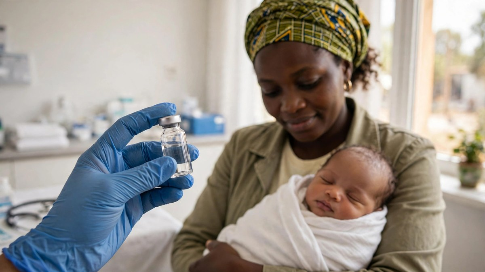

Guinea-Bissau halts US-funded baby vaccine trial
Guinea-Bissau has halted a controversial US-funded hepatitis B vaccine trial on newborn babies after health experts said the plan would withhold a vaccine recommended by the World Health Organization from thousands of babies.

Sources: BBC News, Al Jazeera
Guinea-Bissau has halted a controversial US-funded hepatitis B vaccine trial on newborn babies. A researcher involved in the project said it is now clear the trial will not move forward in the country because the government did not give the necessary approval. The trial had drawn international criticism because it planned to withhold a vaccine recommended by the World Health Organization from half of the babies taking part.
Read More
The study was planned at the Bandim Health Project, a research centre that has worked in Guinea-Bissau since 1978. It was designed to involve 14,000 newborns, with half receiving a hepatitis B vaccine shortly after birth and the other half receiving it six weeks later, so researchers could compare their health over five years. The project received 1.6 million dollars from the United States Centers for Disease Control and Prevention under Health Secretary Robert F Kennedy Jr, who has previously made his anti-vaccine views known.
The World Health Organization called the plan unethical. Its representative in Guinea-Bissau, Walter Kazadi Mulombo, said the vaccine has been used for more than 30 years in more than 115 countries, and a study that withholds it from newborns is unethical. Nearly a fifth of the people in Guinea-Bissau live with hepatitis B, a virus that affects the liver and can lead to long term liver damage and cancer. Babies infected in infancy are most likely to develop chronic infection.
Guinea-Bissau's government banned hepatitis B vaccine trials involving children in January and asked experts from the Africa Centres for Disease Control and Prevention and the World Health Organization to help evaluate the study. In October, Health Minister Quinhin Nantote said the suspension remained in force. On 19 October, judicial police searched the Bandim Health Project's facilities in the capital, Bissau, and seized a batch of hepatitis B vaccines.
The researchers said they wanted to study whether the vaccine given at birth has broader health effects beyond preventing infection, and argued that Guinea-Bissau does not yet offer the vaccine at birth, which gave a unique chance to study it before the birth dose is introduced in 2028. The dean of the University of Southern Denmark, Jakob Grauslund, said the trial had never started, no babies had been enrolled and no vaccinations had been given as part of the research. Critics, including Duke University professor Gavin Yamey, said the proposal reeked of neocolonialism and asked why the research was not being done in Denmark.
What People Say
Africa are not dumping site for laboratory
Africa is not a laboratory for performing practicals
Why can't you try it in America first
Because we don't trust U.S. or Trump administration too
I'm glad Guinea-Bissau didn't allow an entirely unethical and racist study to take place. There are many studies already that show a birth dose gives better protection and the government of Guinea-Bissau has made plans to give the vaccination at birth based on their own determination of the data.
 First New York Measles Death in a Child in Over 30 Years
First New York Measles Death in a Child in Over 30 Years Lancet report calls climate change a global health emergency
Lancet report calls climate change a global health emergency US measles cases top 4,500, more than double 2025 total
US measles cases top 4,500, more than double 2025 total